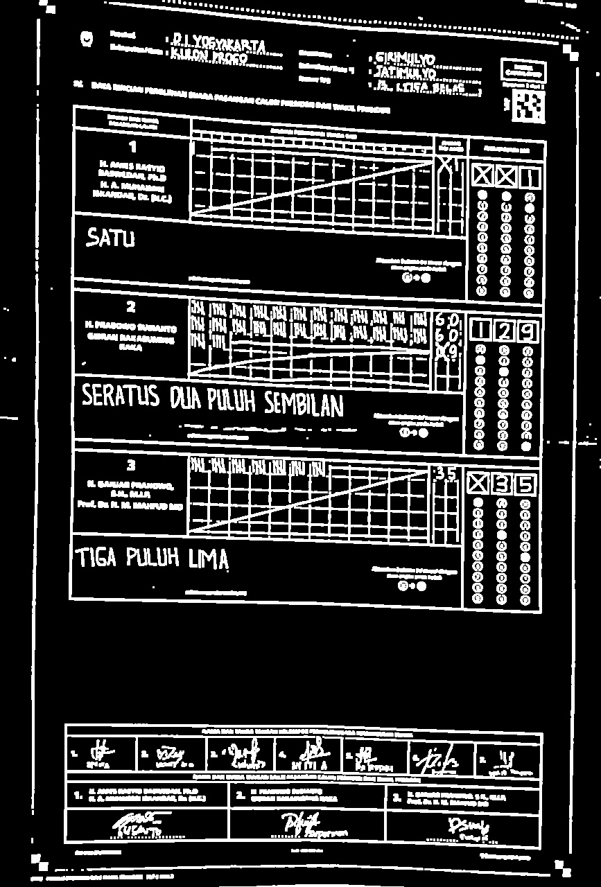

Pengenalan digit tertulis pada formulir C1-Plano (bagian 1: pra-pemrosesan citra)
Pemilihan umum (pemilu) Indonesia 2024 melibatkan sistem rekapitulasi berbasis mobile yang secara otomatis melakukan pengenalan karakter (digit) tertulis atau optical character recognition (OCR) untuk mempercepat diseminasi hasil hitung. Kendati sudah ada beberapa pihak yang mengupas metodenya melalui proses reverse engineering aplikasi sirekap, di tulisan ini saya akan mencoba melakukan OCR dengan sentuhan interpretasi saya pribadi.
Tulisan ini bersifat pedagogis dengan menunjukkan teknik-teknik sederhana dan alat yang umum (Python dengan beberapa pustakanya) yang dapat digunakan untuk permasalahan pengenalan digit. Walau hasil akhirnya akan berkualitas purwarupa (prototype), dengan cukup kreatifitas pembaca dapat mengembangkannya sendiri. Misalnya, dengan mengulangi langkah-langkahnya untuk pengembangan di platform mobile.
Memahami layout formulir C1-Plano
Gambar di bawah ini adalah contoh formulir C1-Plano untuk Pemilu 2024. Formulir ini menyediakan ruang khusus untuk mencatat perhitungan suara melalui turus dan hasil rekapitulasi. Selain mencantumkan angka hasil hitungan, formulir ini juga memiliki area arsiran yang disesuaikan dengan angka hasil perhitungan.
Contoh formulir C1-Plano (sumber)
Permasalahan citra formulir C1-Plano
Untuk proses OCR, kita hanya perlu area penting saja (region of interest atau RoI), yaitu bagian angka hasil hitung masing-masing paslon sisi pinggir kanan, kolom "jumlah suara sah". Idealnya, kita potong saja area angka pada foto formulir tersebut, ambil digit-digitnya sesuai dengan koordinat tertentu, dan lakukan klasifikasi dengan suatu model machine learning. Namun, sepertinya tidak akan semudah itu. Ada beberapa masalah yang akan ditemui di hasil foto C1-Plano, setidaknya, antara lain:
- Perbedaan sudut pandang/perspektif pengambilan gambar, sehingga hasil nampak miring
- Pencahayaan yang tidak konsisten karena tidak ada standarisasi teknis alat pengambilan gambar
- Perbedaan kualitas gambar, karena beda tempat pemungutan suara (TPS) kemungkinan beda pula kamera yang digunakan panitia
- Occlusion, yaitu adanya bagian pada gambar yang terhalangi objek lain, misalnya gambar terhalangi tangan orang lain saat pengambilan gambar
- Inkonsistensi penulisan digit tiap orang
Permasalahan 1 - 4 akan diselesaikan pada tahap pra-pemrosesan dengan menggunakan beberapa teknik pengolahan citra digital. Untuk permasalahan 5, saya akan mengandalkan teknik machine learning dengan model neural network. Solusi permasalahan 5 akan dipaparkan pada tulisan bagian kedua.
Pra-pemrosesan citra (image preprocessing)
Tahap pertama adalah pra-pemrosesan. Kita akan bekerja dengan citra dalam skala abu-abu (grayscale image) dan biner karena informasi warna tidak terlalu penting. Oleh karenanya, perlu dilakukan konversi citra berwarna ke grayscale jika dibutuhkan. Hasil akhir yang diharapkan di tahap ini adalah RoI dengan distribusi keabuan dan kontras citra yang sudah ditingkatkan, dan perspektif yang diperbaiki, seperti berikut ini.

Hasil pra-pemrosesan
Perbaikan kontras dengan teknik perataan histogram (histogram equalization)
Citra formulir bisa dipastikan tidak selalu ideal. Salah satu masalah utama yang ditemukan adalah buruknya kontras yang berakibat sulitnya pendeteksian garis dan komponen citra lainnya. Untuk permasalahan ini, kita dapat menggunakan teknik perataan histogram1. Sederhananya, teknik ini akan menyebarkan intensitas keabuan secara merata sehingga bagian dengan kontras rendah bisa menjadi lebih tinggi. Efek dari perataan histogram dicontohkan oleh gambar di bawah ini.

Citra sebelum dan sesudah perataan histogram (sumber)
Perlu dicatat bahwa teknik perataan yang akan digunakan bukanlah perataan yang biasa, namun perataan histogram adaptif. Tepatnya, saya akan menggunakan perataan histogram adaptif dengan pembatasan kontras, atau contrast-limited adaptive histogram equalization (CLAHE)2. Mengapa adaptif? Karena, dalam beberapa kasus, perataan histogram biasa bekerja pada seluruh citra sebagai satu unit. Ini berarti bahwa perubahan yang dibuat pada histogram diterapkan secara seragam ke seluruh citra. Di sisi lain, metode adaptif memungkinkan kita untuk melakukan perataan histogram berdasarkan bagian-bagian lebih kecil dari citra, sehingga dapat menangkap konteks area yang lebih lokal.
Bagian pertama pra-pemrosesan ini dapat dibuat dengan mudah sebagai berikut:
from typing import Tuple
import numpy as np
import cv2
def preprocess(gray_image: np.ndarray) -> Tuple[np.ndarray, np.ndarray]:
gray_image = cv2.GaussianBlur(gray_image, (3, 3), 0)
clahe = cv2.createCLAHE(clipLimit=3.0, tileGridSize=(11,11))
equalized = clahe.apply(gray_image)
...
Pengambangan citra (image thresholding)
Pengambangan citra digunakan untuk memisahkan objek dari latar belakangnya3. Teknik ini melibatkan konversi citra abu-abu menjadi citra biner, di mana pixel citra dikategorikan menjadi dua nilai intensitas (misalnya, hitam/putih) berdasarkan nilai ambang batas (threshold) tertentu.
Seperti perataan histogram, pengambangan citra juga bisa bekerja dalam model global dan adaptif. Dalam pengambangan citra biasa, nilai ambang batas yang sama diterapkan secara seragam ke seluruh pixel citra. Nilai ambang batas ini biasanya adalah nilai konstan yang dipilih berdasarkan analisis histogram citra atau kriteria tertentu. Semua pixel dengan intensitas di atas ambang batas diatur ke nilai maksimal (misalnya, putih pada citra biner), dan pixel dengan intensitas di bawah ambang batas diatur ke nilai minimal (misalnya, hitam). Pengambangan citra adaptif, seperti namanya, melibatkan pemilihan nilai ambang batas yang berbeda-beda untuk setiap wilayah atau piksel citra, berdasarkan karakteristik lokal citra tersebut.

Pengambangan lokal vs adaptif (sumber)
Metode adaptif lebih fleksibel dibandingkan dengan pengambangan citra biasa karena dapat menyesuaikan ambang batas secara lokal, memungkinkan untuk mengatasi variasi pencahayaan atau kontras yang ada di dalam citra.
Ini berguna terutama pada citra dengan pencahayaan yang tidak merata, di mana pengambangan global mungkin tidak efektif dalam memisahkan objek dari latar belakang di seluruh citra.
Oleh karena itu, saya akan menggunakan metode adaptif.
Kode fungsi preprocess dapat dilengkapi sebagai berikut.
def preprocess(gray_image: np.ndarray) -> Tuple[np.ndarray, np.ndarray]:
gray_image = cv2.GaussianBlur(gray_image, (3, 3), 0)
clahe = cv2.createCLAHE(clipLimit=5.0, tileGridSize=(11,11))
equalized = clahe.apply(gray_image)
thresholded = cv2.adaptiveThreshold(
equalized,
255,
cv2.ADAPTIVE_THRESH_MEAN_C,
cv2.THRESH_BINARY_INV,
15,
15,
)
thresholded = cv2.erode(thresholded, np.ones((2, 2)), iterations=1)
thresholded = cv2.dilate(thresholded, np.ones((2, 2)), iterations=2)
return thresholded, equalized
Pengambagan adaptif yang saya gunakan berbasis mean (dengan argumen cv2.ADAPTIVE_THRESH_MEAN_C), yang berarti bahwa kita menggunakan nilai rerata dari pixel bertetanggaan sebagai nilai ambang batas.
Argumen cv2.THRESH_BINARY_INV berarti bahwa kita nilai pixel yang lebih besar daripada nilai ambang akan dianggap 0 (hitam), dan jika tidak, akan dianggap 255 (putih).
Ini bertujuan untuk menjadikan garis berwarna putih sebagai objek foreground, sekaligus mengikuti konvensi OpenCV yang menganggap putih sebagai foreground.
Saya akan menggunakan contoh citra formulir di tautan ini sebagai contoh yang relatif mudah, tapi agak kurang ideal (sudut pandang agak miring). Fungsi di atas jika diterapkan pada citra abu-abu formulir C1-Plano, akan menghasilkan citra terambangkan seperti berikut ini.
{kind=link}
Hasil pengambangan
Tugas selanjutnya adalah mengambil satu persegi besar di tengah (pixel putih terhubung yang membentuk quadrilateral) yang berisi hasil penghitungan, dan membuang bagian putih selainnya.
Ekstraksi RoI dan digit
Pertama, lakukan analisis komponen terhubung. Sebuah komponen terhubung dalam citra adalah kumpulan pixel yang terhubung satu sama lain melalui tetangganya dan memiliki properti serupa (misalnya, intensitas yang sama dalam citra biner). Misalnya, suatu garis terbentuk dari beberapa pixel yang terhubung. Dua pixel dianggap "terhubung" jika mereka berdekatan dan memenuhi kriteria tertentu (biasanya berdasarkan nilai piksel).
Ketika sebuah komponen terhubung ditemukan, semua piksel dalam komponen tersebut diberi label yang sama. Ini dapat dilakukan menggunakan algoritma seperti flood-fill atau algoritma two-pass. Setelah semua komponen terhubung dilabeli, atribut seperti ukuran, bentuk, atau posisi dapat diekstraksi untuk setiap komponen.
Komponen yang kita butuhkan (selanjutnya akan saya sebut sebagai komponen utama) diasumsikan memiliki tinggi yang lebih tinggi daripada $\frac 2 5$ kali tinggi citra, dan memiliki lebar lebih dari setengah lebar citra. Tidak ada cara yang lebih baik daripada bereksperimen dengan mengganti nilai-nilai tersebut.
def get_main_component(binary_img: np.ndarray) -> Tuple[np.ndarray, np.ndarray]:
labeled_image, n_labels = label(binary_img, connectivity=2, return_num=True) # type: ignore
valid = []
height, width = binary_img.shape[:2]
for i in range(1, n_labels + 1):
_, _, h, w = component_rect(labeled_image, i)
if h > int(float(height) * (2.0 / 5.0)) and w > width // 2:
valid.append(i)
break
img = np.zeros((height, width))
img[labeled_image == valid[0]] = 255 # Take only the valid component
return img, labeled_image
Fungsi di atas digunakan pada citra yang sudah melalui proses pengambangan (luaran dari fungsi preprocess).
Jika berhasil menemukan komponen utama, hasilnya kurang lebih akan seperti berikut ini.

Komponen utama yang terekstraksi
"Kenapa tulisan-tulisan dan angka-angkanya hilang?"
Tidak masalah. Nanti kita bisa kembalikan dari citra aslinya. Yang kita butuhkan sekarang adalah sudut-sudut dari komponen utama, yang berguna untuk "meluruskan" kembali perspektif citra seperti yang akan dilakukan di langkah selanjutnya.
Catatan: algoritma ini tidak sempurna (dan tidak akan mungkin bisa sempurna), sehingga bisa saja gagal dalam menemukan komponen utama. Sisanya adalah soal bagaimana kita pandai-pandai melakukan trik olah citra.
Mencari sudut-sudut terluar pada quadrilateral komponen utama
Strategi unutk mencari sudut-sudut pada komponen utama cukup sederhana. Misal $w$ adalah lebar citra dan $h$ adalah tinggi citra. Dengan asumsi sumbu $Y$ positif ke arah bawah, maka:
- sudut kiri atas komponen utama adalah lokasi pixel putih yang terdekat dengan koordinat $(0,0)$
- sudut kanan atas komponen utama adalah lokasi pixel putih yang terdekat dengan koordinat $(0,w)$
- sudut kiri bawah komponen utama adalah lokasi pixel putih yang terdekat dengan koordinat $(h,0)$
- sudut kanan bawah komponen utama adalah lokasi pixel putih yang terdekat dengan koordinat $(h,w)$
Untuk memperkecil ruang pencarian masing-masing sudut, kita dapat membagi citra komponen utama menjadi empat kuadran. Untuk tiap kuadran, cari sudut yang diinginkan. Gambar di bawah mengilustrasikan proses ini.

Pencarian sudut-sudut quadrilateral komponen utama
def find_closest_pixel_to_point(
pixel_coordiates: np.ndarray, reference_point: np.ndarray
) -> np.ndarray:
min_idx = ((pixel_coordiates - reference_point) ** 2).sum(1).argmin(0)
return pixel_coordiates[min_idx]
def get_corners(component) -> np.ndarray:
"""
Find 4 pixel coordinates closest to each corner
"""
height, width = component.shape[:2]
# top-left
tl_coords = np.argwhere(component[: height // 2, : width // 2] == 255)
tl_point = find_closest_pixel_to_point(tl_coords, np.array([0, 0]))
# top-right
tr_coords = np.argwhere(component[: height // 2, width // 2 :] == 255)
tr_point = find_closest_pixel_to_point(tr_coords, np.array([0, width])) + np.array(
[0, width // 2]
)
# bottom-left
bl_coords = np.argwhere(component[height // 2 :, : width // 2] == 255)
bl_point = find_closest_pixel_to_point(bl_coords, np.array([height, 0])) + np.array(
[height // 2, 0]
)
# bottom-right
br_coords = np.argwhere(component[height // 2 :, width // 2 :] == 255)
br_point = find_closest_pixel_to_point(
br_coords, np.array([height, width])
) + np.array([height // 2, width // 2])
corners = np.array([tl_point, bl_point, tr_point, br_point])
return corners
Deskewing
Setelah menemukan keempat sudut, kita dapat melakukan koreksi perspektif (deskewing).
Fungsi ini menggunakan citra asli dan koordinat empat titik yang menggambarkan sudut komponen utama yang terdistorsi.
Kemudian, fungsi ini menghitung matriks transformasi perspektif yang diperlukan untuk memetakan titik-titik ini ke lokasi baru yang menghasilkan citra dengan orientasi yang benar dan tanpa distorsi perspektif.
Matriks transformasi dihitung dengan menggunakan fungsi cv2.getPerspectiveTransform.
Penerapan transformasi dilakukan melalui cv2.warpPerspective, yang akan memanipulasi citra asli sesuai dengan matriks transformasi, memindahkan koordinat asli ke posisi baru. Hasilnya adalah citra yang sudah dalam keadaan deskewed dengan proporsi yang seimbang, memperbaiki masalah kemiringan atau distorsi akibat perspektif yang kurang baik.
Matriks transformasi ini akan kita gunakan pada citra asli, sehingga bagian komponen utama dari citra tersebut akan "dikembalikan" dalam keadaan tegak lurus. Berikut implementasinya dalam Python:
def deskew(
image: np.ndarray, src_coords: np.ndarray, dst_height: int, dst_width: int
) -> np.ndarray:
# target deskewing corners
dst_coords = np.array(
[[0, 0], [0, dst_height], [dst_width, 0], [dst_width, dst_height]]
).astype(np.float32)
mat = cv2.getPerspectiveTransform(src_coords, dst_coords)
result = cv2.warpPerspective(image, mat, (dst_width, dst_height))
return result
Seluruh fungsi digunakan sebagai berikut:
if __name__ == "__main__":
# read image and preprocess
img = cv2.imread("path/to/input_image.jpeg")
gray = cv2.cvtColor(img, cv2.COLOR_RGB2GRAY)
thresholded, equalized = preprocess(gray)
# get main component
component, labeled = get_main_component(thresholded)
# get corners of main component
corners = get_corners(component).astype(np.float32)[:, ::-1]
deskewed = deskew(equalized, corners, 600, 500)
cv2.imwrite("path/to/output_image.jpeg", deskewed)
Dengan (beruntung dan) hasil sesuai harapan:
Jika RoI berhasil ditemukan, hasil deskewing akan relatif konsisten. Berikut ini contoh beberapa hasil ekstraksi RoI, termasuk contoh deskewing yang gagal:

Beberapa contoh hasil ekstraksi RoI
Karena sudah mendapat hasil yang cukup konsisten, di titik ini seharusnya kita sudah bisa memotong area-area digit tertulis untuk dijadikan data latih model machine learning dan melakukan OCR. Desain model machine learning dan proses-proses setelahnya akan dipaparkan di bagian kedua.